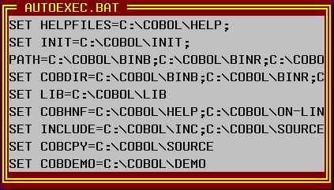
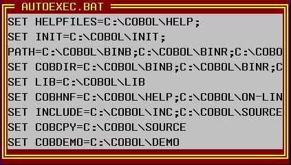

Codificação COBOL
EXEC COBOLware Note
UPDATE
TITLE "AUTOEXEC.BAT"
FILE "C:\AUTOEXEC.BAT"
LINE 8
COLUMN 15
WIDTH 40
HEIGHT 9
END-EXEC
Efeito no modo gráfico

Efeito no modo texto.

Editor de notas.
Note
[ UPDATE
| VIEW
]
[
FILE arquivo
| MESSAGE(1...25) texto
]
[ TITLE
mensagem ]
[ LINE
linha ]
[ COLUMN
coluna ]
[ WIDTH
colunas ]
[ HEIGHT
linhas ]
[ EDIT-ON
KEY;tecla
]
[ ARROW
indicador-de-tab
]
[ TIMEOUT-ENABLE
| TIMEOUT-DISABLE
]
[ TIMEOUT-RETURN
; retorno-tempo-limite-decorrido
]
UPDATE
O
arquivo será editado na janela corrente.
UPDATE-WINDOW
No
modo gráfico, o arquivo será editado em uma janela
filha.
VIEW
O arquivo será
exibido na janela corrente com a edição
desabilitada e apenas o que couber na área visível.
VIEW-WINDOW
No modo gráfico,
o arquivo será exibido em uma janela filha com a edição
desabilitada e apenas o que couber na área visível.
Título da janela de até 78
caracteres. Se declarado, o arquivo será editado em uma janela
à parte.
arquivo
Nome do arquivo texto
ser editado. A edição está limitada a 32.757
caracteres.
texto
Texto de até 78 caracteres a ser exibido em cada linha (até 25).
linha
Linha de posicionamento da janela ou do campo memo.
Coluna de posicionamento da janela ou do campo memo.
Largura da janela ou do campo memo em colunas.
Altura da janela ou do campo memo em linhas.
EDIT-ON
Habilita
o retorno por tecla de função tecla
Código
da tecla pressionada (CWEDIT.CPY).
indicador-de-tab
Variável
de um byte que recebe o valor "<"
para indicar que o usuário deseja voltar campo na janela e ">"
quando deseja avançar com a opção EDIT-ON
desabilitada.
TIMEOUT-ENABLE
Habilita a terminação
por tempo de ociosidade decorrido, a opção default será
automaticamente selecionada pelo sistema em função do
limite de ociosidade declarado na configuração
TIMEOUT-DISABLE
A intervenção do usuário será obrigatória o processamento só terá segmento quando o usuário fechar a janela.
retorno-tempo-limite-decorrido
Variável que receberá o retorno indicativo da ocorrência de limite de tempo decorrido (1 ou zero) caso o usuário tenha selecionado uma opção manualmente.
A acentuação do arquivo texto deve ser codificada com a página de código 850. Os processadores de tela se encarregam de traduzir para o codificação apropriada a plataforma de execução.
|
Codificação COBOL |
|
EXEC COBOLware Note
UPDATE |
|
Efeito no modo gráfico |
|
|
|
Efeito no modo texto. |
|
 |